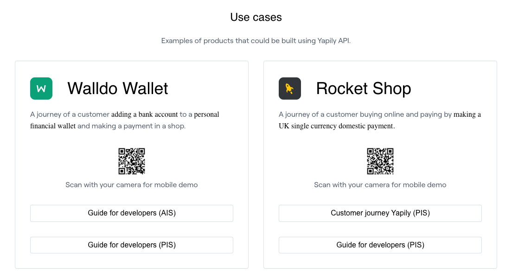
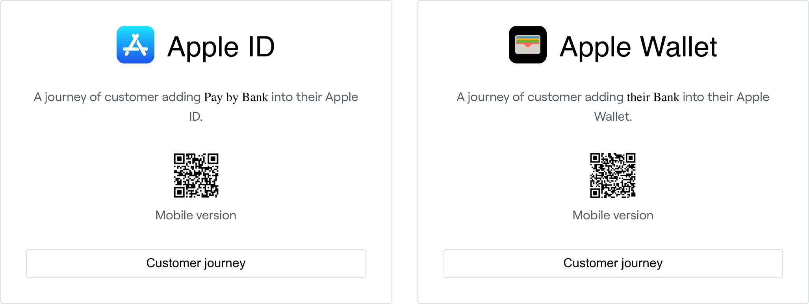

Alejandro Velazquez
Lead Product Designer & Design Manager
Fintech · Open banking · Payments · SaaS · Platforms
I work where the interface is only part of the problem
From consumer payments to open banking infrastructure
Four stories
Months of integration → around two weeks
Across banks, markets, devices and licence models. Still in beta as of August 2026.
The expensive part was people, not screens
From invisible API to understandable product platform
Positioning changed. The website and the system had to change with it.
Move the difficult decision to the expert
Build independence, not dependency
Qualitative evidence finds the problem. Analytics shows its scale. Experiments test the change.
A Lead Product Designer role with room to shape the product.
Strategy + hands-on design + commercial impact
Alejandro Velazquez
Yapily Hosted Pages
Making open banking easier to launch, use and trust
From months of custom work to a launch path of around two weeks
The API gave customers capability, not a usable journey
We first tried to explain the complexity
Better documentation helped. It did not remove the work.
The product came out of the work, not a brief
The idea of a widget and an embeddable checkout emerged from trying to solve the integration problem, not from a predefined roadmap item. The PM and I co-originated it.
The majority needed a faster path
Turn repeatable integration work into product capability
A compliant, white-label flow for payments and account data.
Strategy, design and continuing ownership
Five screens. More than forty possible journeys.
Some combinations do not exist. cVRP is UK-only, so market does not multiply it. A preselected institution on a direct licence skips every screen we make. It is a sparse matrix, not a neat grid.
The journey stops being ours
Reference wireflows became backend logic
Design + Product + Business Analysis + Engineering + market expertise. The artefacts that mattered were wireflows, funnel definitions and journey maps, not isolated screens.
A familiar layout built on unreliable assumptions
A hard-coded popular-bank grid. We explored grids, two columns, search-only and accordions.
Match the method to the decision
What looked like a layout problem was an intelligence problem
Search was the main way people found their bank, taking five to fifteen seconds. Popular-bank testing brought lookup below three seconds in many cases.


Two optimisations wanted the same space
Returning users skip selection entirely: their bank is pre-selected on the payment screen, and Change bank, beside the bank name, goes back to the full list.
Sometimes the best QR screen is no QR screen
The screen has to teach users to distrust screens like it
Design did not always own the fix
Retry limits were different by bank. Research surfaced the mismatch; Engineering built per-bank mappings.
We postponed the release to fix it
A commissioned audit found contrast failures, and screen readers announcing raw SVG markup. Which left the flow unnavigable by screen reader. We postponed a release to fix both rather than shipping and correcting afterwards.
White-label should mean controlled flexibility
Launch in the order the market demanded
Reliability was the main launch risk. Visual quality cannot compensate for an unsuccessful bank connection.
Self-service for most. Guidance for customers who need control.

A long sequence of small, evidenced improvements
Not all of this was design. Bank coverage, API reliability, frontend and backend work all contributed. Design's clearest contribution was discoverability, handoff guidance, authentication accuracy, trust and accessibility.
In a separate unmoderated study of 21 testers in Germany including participants with disabilities, 62% preferred the new flow overall, rising to 78% among testers with disabilities.
I would design for licence flexibility and embeddability earlier.
One product can hide more than one customer type.
Yapily Console
Turning a sales-led onboarding journey into a self-service platform
Nobody asked me to do this
The Console wasn’t on the roadmap. The first task wasn’t design. It was making the case that a deprioritised internal tool was one of the more expensive things in the business.
The goal was not a better dashboard
It was to remove repeatable human work from the customer journey.
A certificate vault for five customers


The API moved. The Console did not.
Every missing feature became somebody's job
The product gap presented as a need for more headcount.
Six to twelve months to production
The journey moved at the speed of whoever had calendar space.
A design argument was not enough
Use the product like an outsider
No internal shortcuts.
Two were fixed directly: the CORS problem, and a fuller sandbox that also improved automated testing.
The interface, commercial process and operating model were one experience
The problem had a clear shape
Split the path
Account to live in one to two months for existing products
A target outcome, not yet a measured adoption result.
Organisation became the commercial container
One customer is not always one company
Each sub-application holds its own compliance status, so one can be live while another is still under review.
Make the next step self-evident
A seven-step route instead of a Customer Success explanation.
Customers need to see the performance we were asking them to improve
Test the work with the people who operate it
Small decisions removed expensive mistakes
A system for dense operational products
Evidence before review
The configurator proves the model
A customer task replaced a support ticket and an engineering task.
Directional improvement, not a finished adoption story
Exact support, backlog and setup figures are confidential.
Ask cardinality questions early.
Can there be more than one licence, organisation, merchant, region or behaviour?
HeadBox: turning a marketplace the right way round
Research changed the business model, not just the interface
£150,228 ARR within three months

The brief was to improve conversion
It assumed the marketplace needed to work harder. The research said the shape was wrong. What I proposed was inverting who does the difficult part. And the company changed its revenue model as a consequence.
An events agency with a digital marketplace
Product decisions were separated from customer evidence
“Fix the filters”
Nobody could answer any of them. The first task became building understanding.
Create the evidence before creating the answer
A report was not enough for a sales-heavy company
Both sides were failing for opposite reasons
Manual matching made the product look more successful than it was
One booking, mapped message by message. A guest and a venue exchanging enquiries, proposals, a cancellation, a re-booking and repeated reminders about tea and coffee, with HeadBox support stepping in to chase on their behalf.
The expertise was on the wrong side.
Capture requirements. Let experts choose.
The first Lead Feed was a spreadsheet
It proved venues were better at matching, and that they would pay for access, before we built anything.
From spreadsheet to product in two months
Ask for what they know, not what the industry knows
Brief completion improved directionally from roughly 50% to around 75% after simplification. Personal details moved later, once the product had helped clarify the event.
One product solved opposite volume problems
Value, volume and speed
Self-service did not replace expert service
High-value corporate events, some worth £1–2 million, were filtered out and routed to account managers.
Pendo changed what the team could learn
A data analyst later supported matching models. I was not involved in creating those models.
Predictable access revenue, with commission on confirmed bookings
Approximately 90% of the original structure remains.
Small refinements, not a fundamental redesign. The model has stayed useful for around seven years.
Lead designer, researcher and practice builder
The core new-products squad was a PM, an engineer and me.
Two lessons that repeated at Yapily
Yapily Brand & Website
Making an evolving company easier to understand and harder to confuse with competitors
The company changed its explanation several times


Every competitor website looked the same
Customers needed to understand the offering, not only the mission
Dedicated product sections clarified what Yapily provided, and how platform, Hosted Pages, data and payments related to each other.
Positioning was a cross-functional decision
Creative direction from concept to live system
Agencies completed the final visual designs.
A more expressive system for the marketing surface
Kept separate from the dense product tools and the white-label Hosted Pages system, so Marketing could move at its own pace.
One system across the full brand ecosystem
The old CMS was expensive and difficult to operate
Migration improved publishing speed across thousands of links, landing pages and blog posts, and gave Marketing more independence.
Clearer products, stronger differentiation, faster publishing
Commercial pipeline evidence is confidential.
A website cannot fix unclear positioning, but it exposes it.
The information architecture became a strategic tool, not only a publishing structure.
Research practice
Use inside Hosted Pages and Console rather than as a standalone case study.
Yapily had no dedicated research function
Research had to be continuous, lightweight and understandable outside Design.
A cadence, not a project phase
The buyer and the end user were different people
Use the cheapest method that can answer the decision
Ship, iterate or stop
Evidence only matters if the team uses it
More feedback is not automatically better
An embedded documentation chat produced more volume than the team could manage. Collection without triage creates noise.
I would establish a central repository and dedicated research support earlier.
Design systems
Custard into Hosted Pages, Yapily UI into Console, Mark into Brand & Website.
Many products, small frontend teams and frequent rebrands
From disconnected interfaces to shared foundations
One system would have forced false consistency
Share only what is stable and cheaper to maintain together
Accessibility was encoded, tested and taught
An external provider identified approximately 94 changes across code, contrast and focus behaviour.
The systems supported products and operations
Move the source of truth closer to the work
Too new to claim quantified maintenance savings.
Formalise versioning and deprecation
Open banking UX guidance and demos
Supporting material for the Hosted Pages deck.
Some customers needed to build their own experience
Documentation and interactive demos, designed from scratch
Built with Pre-sales and Implementation, then expanded by my team. We reviewed customer implementations together before launch.
Make an infrastructure product visible

One asset across Sales, Pre-sales, Implementation and customers.
HeadBox evidence and artefacts
Optional, for a longer presentation or Q&A.
The problem list after research
Maintain the current business while discovering the next one
Listings became structured matching data
Incomplete listings became visibly less likely to receive relevant opportunities.
Give operators visibility without making them the product
I build the evidence before I argue for the design.